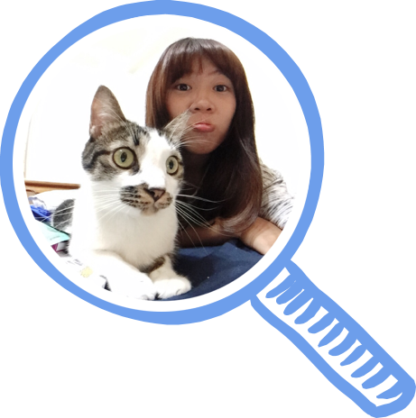
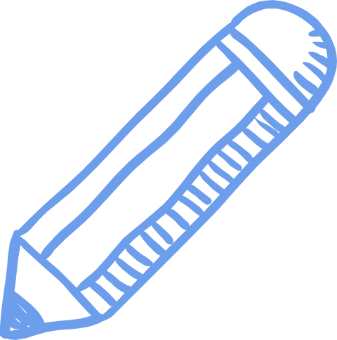
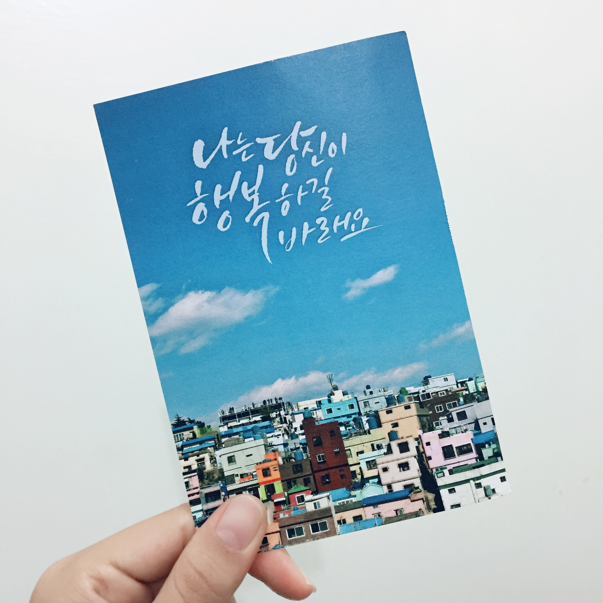
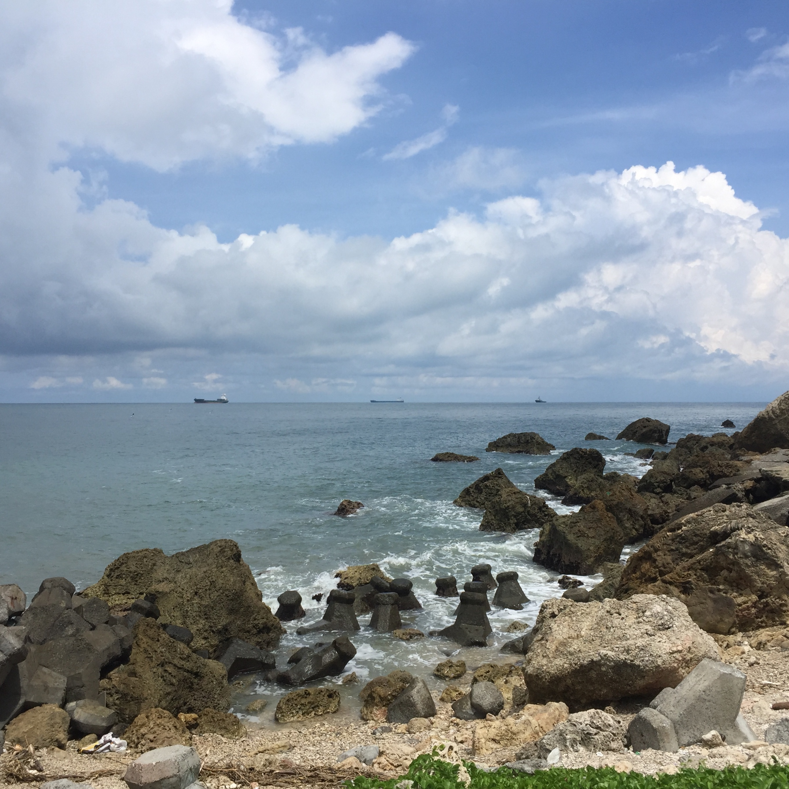
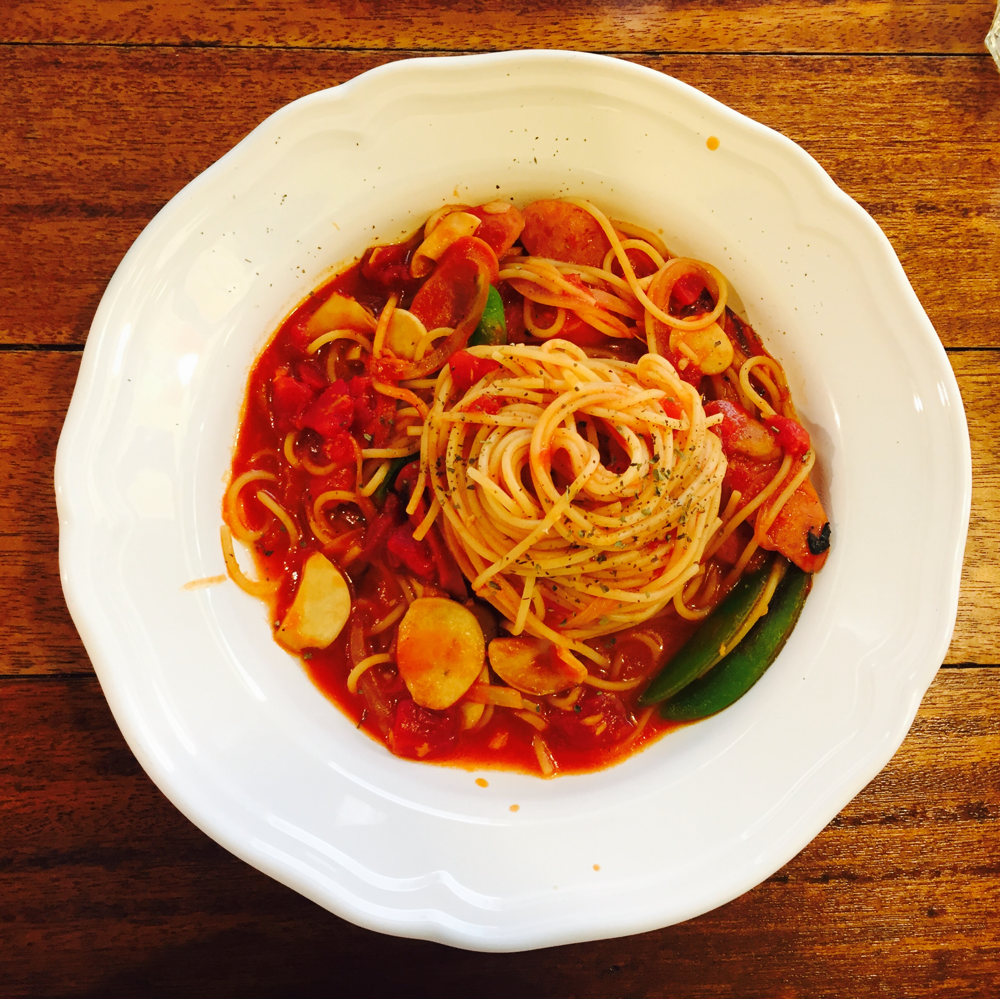
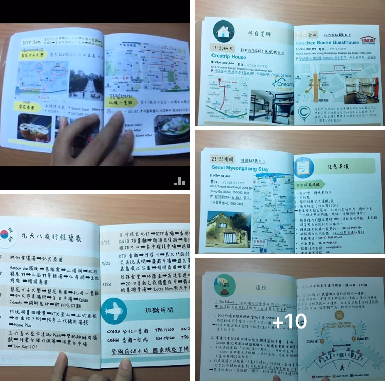
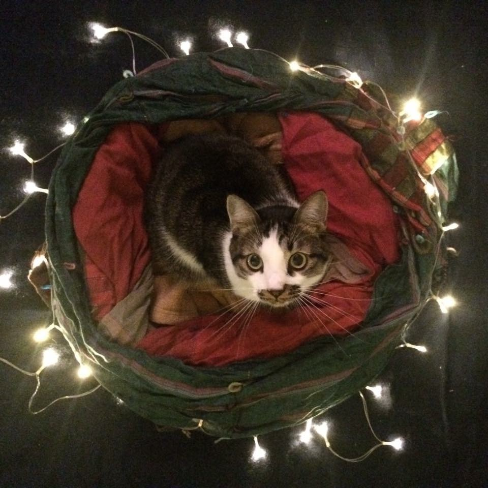
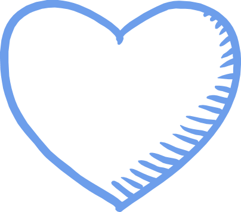

Yi Ping Chen
Fresh graduate
| Birth | 1995 |
|---|---|
| 居住地 | 臺灣，臺南 |
| 語言能力 | 中文，英文，韓文 |
| 開發技能 | AutoCAD, Powerpoint (逐漸增加中...) |
| 學習經歷 |
大航道計劃結業, 2018 中山大學結業, 2017 |
About me


Travel
喜歡自助旅行，親自規劃佈署，配合自己的步調，漫步在另一個城市空間，欣賞當地文化風景。

Nature
或許是大學靠海的原因，時常可以看到大海，大自然永遠具有平定療癒人心的能力。

Delicacies
臺南美食小吃的天堂，誰能不愛美食呢？那就不必多說哈。

PPT Design
大學報告煉出技能，旅行必製旅遊手冊，不敢說最好只求更好。

Animal
人類最親近夥伴：寵物，照片上雖是姐姐的貓， 融化～而我卻成為所謂的貓奴。

Just do it!
Never mind. Never give up.
兩個星期前，滿心期待踏上大航道計劃，卻因剛開始的Ruby課程而學習士氣受到打壓，雖然程式語言的語法略懂，
但要如何與電腦溝通，其實懂的運算思維拆解問題才是首要基礎。
重新調適心態後，開始使用其他自學網站，增強自己的邏輯思維以及語言熟悉，和社團上的朋友互相打氣， 希望在接下來的半年，自己能夠維持一樣的熱忱，和Light house一樣不斷更新與進步，大家加油！